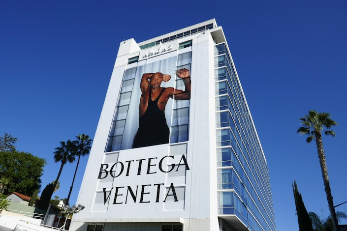

9 January 2025
AI try-ons in luxury fashion
I came across Doji, which is launching an app where users can try on clothes and see how they would look on their actual bodies before committing to purchase. This could be a game-changer and it’s something that can be achieved with the current state of AI technology.
82% of customers want AI to assist in reducing the time they spend researching what to buy according to McKinsey. With Doji, the user needs to upload 2 full-body photographs and 8 selfies, after this the user will be able to see studio like product images with your own body, looking like you have modeled the ecommerce catalog at SSENSE (it seems like that was the intention, the AI face expressions are very telling).


Many competitors have explored virtual try-ons for shoes, eyewear, makeup, and bags, but creating realistic 3D models of leather goods and clothing has always been incredibly challenging, especially for legacy luxury brands. The process is lengthy, and the file sizes are huge, which leads to a slow user experience. The technology is also not mature enough for mainstream adoption. There are a few interesting players like DRESSX who will continue down this path. An alternative to real-time virtual try-ons is static AI-generated outfits, also known as AI try-ons. This is a great alternative, albeit using different technology. It may be sufficient to help users make purchasing decisions, while a real-time virtual try-on in 3D is more of a gamified experience.
Try-ons are not a new idea… do you remember the outfit selection in Clueless? Recently, several people have picked up the idea and tried to recreate it, but these attempts require a lengthy setup. One thing we know about online shoppers is that they want immediate results and fast delivery.

The impact this could have on online shopping is enormous. Users would save time deciding what to buy, reduce returns (and it's impact financially and ecologically), and generally make shopping more fun, which is something that the younger generation is expecting more.
Here is a summary of my observations after getting access to their beta app:
✿ Doji is an app that you need to download from Apple’s App Store (once it becomes publicly available).
✿ The setup is an easy and quick user experience: it asks what I wear (Womenswear/Menswear, then it asks to take 8 selfies in good light and upload 2 full body photos. If you are sitting on a sofa or in bed, you still need to take the 8 selfies but then you can select a full-body photo from your photo library.
✿ After the setup, I have to wait 30mins for the app to generate my looks.
✿ The generated looks are very impressive and in general the photos look good. I can see looks and styles which I would never wear, but it’s fun to see my alter-egos.
Next steps for this to be adopted by brands:
✿ Integrate the look generation into the brand’s website. Having a button called ‘Generate my look’ would make this a fun shopping experience helping an indecisive user to buy the item.
✿ Ask users for their height and weight and generate a more realistic body. In my generated looks I look much taller and thinner.
✿ Allow me to do the styling. I imagine this might be more time consuming (both to develop and then for the user to generate), but the experience could be more rewarding with it. Currently in Doji when I select a YSL blouse to try-on, it then generates the full look with random trousers and boots.
✿ If you ask the user to wait 30mins when they start out while they are shopping, they might never return and forget about the AI try-on. This should be improved.
✿ Be able to adapt the photographs based on the brand’s e-commerce catalog photography style. Visually it would integrate very well into e-commerce, the user could really feel like part of the brand’s culture.
We are seeing more and more tools to visualise the objects around us virtually and experiment with clothing virtually (AR VTO, 3D product visualisation, AI avatar try-on and more). It's fun and they can all co-exist. The key challenge is ensuring that users love what they see on-screen and feel just as excited when the item arrives in their mailbox.


On the images wearing: Sandy Liang white top, Alaia black dress, Jacquemus x Nike white dress, Diesel top
24 April 2024
I spent 10 days trying out the Apple Vision Pro
Here are my observations from a digital/web experience standpoint
✿ Big screens: Designing for screens larger than 30 inch is crucial given the industry’s usual focus on smaller, mobile screens due to 80% of users being mobile.
✿ Checkout process: Filling out forms and checkouts is time-consuming on the Apple Vision Pro. While not its primary function, the process should be streamlined for those who use it for this purpose.
✿ User experience: long scrolling pages are tiring...
✿ Analytics: It's unclear how many visit my site using the Apple Vision Pro as it only appears as Safari on macOS Intel in Google Analytics. Identifying it requires a better method, which I’m still exploring.
✿ 3D/AR experiences: Visualizing products in your home with AR is both fun and engaging. The high-definition environment demands equally high-quality 3D models.
In conclusion, when AR devices become consumer goods it will impact how we build digital experiences: we will need to design and build for larger screens and ensure navigation is fast with low hand gesture and eyes effort.
12 May 2022
AR and VR mass adoption is just around the corner, with Apple rumored to release their AR/VR headset by 2023
As our smartphones’s camera and processor got better over the years, our AR/VR experiences got better as well. Thanks to LiDAR built in your phone (Light Detection and Ranging technology that measures how long it takes light to reflect back from objects) we are able to see 3D models more realistically since the last 2 years.
Matthew M. Williams at Givenchy created his dream shoes the TK-360: an innovative and technical sneakers that are made out of the same durable knit material everywhere, sole included. We have introduced on givenchy.com a high-res 3D product view and you can visualize the sneakers on your iPhone in AR in your living room or at the Palais Royal. Check it out on givenchy.com
In conclusion, when AR devices become consumer goods it will impact how we build digital experiences: we will need to design and build for larger screens and ensure navigation is fast with low hand gesture and eyes effort.
10 March 2021
Bottega Veneta has left social media platforms. When will other brands follow-suit?
There was a lot of coverage when Bottega Veneta deleted themselves from social media platforms in January 2021, while Instagram and the likes are considered as big money making machines for brands. But are they really?

In 2017, Procter & Gamble cut around $200 million of its advertising spending in the digital space, due to concerns about bot fraud and brand safety. This money was reinvested in more traditional advertising channels, like television and radio. The outcome? P&G reduced its overall spending and still increased the reach of its messaging by 10%.
Is Bottega Veneta using the same strategy and investing their money in more traditional channels, like huge billboard ads, magazine ads but still covering social media by gifting to influencers? What else do they have under their hood? What we know for sure is that social media platforms are failing to truly capture attention or influence consumer behaviour. So brands have better come up with an advertising strategy where they rely less on them.
Online advertising wasn’t always bad. Today it’s pretty toxic.
While online advertising has undeniably made products & services more accessible, today it often feels like it’s the opposite - it’s making our lives more difficult. If you do a google-search today, you will see that the first two pages of results will be ads - pretty annoying. Advertising funded search-engines are biased towards the advertisers and not the needs of the consumers.
Huge part of online advertising is responsible for “attention crisis”, “deep surveillance based-profiling” and “bias toward inflammatory content”. These are all outcomes of advertising-based business models of the websites and apps we offer so many hours of our life...
It is impossible to think about the future of the web without thinking about the future of advertising. Changes in how attention is bought and sold online will have major consequences not only for our everyday experience of the web but also for self-expression, identity and democracy. We are sure you all heard the news.

Is this another financial bubble? Is it going to pop?
What if the advertising revenue from social media platforms [Instagram/FacebooküëÄ] and search engines [GoogleüëÄ] were to decline rapidly, and more brands follow the path of P&G and Bottega Veneta, withdrawing themselves from these channels? The ripple effects of such a crisis in online advertising would fundamentally change how we consume and navigate the web.
“But we can’t delete ourselves from Instagram. We need the data”
It is technically possible for brands to know that this ad was viewed by this individual, at this time, in this location. It’s possible to know if the individual has bought the advertised product. Deeper context, however, remains blurry. This matters because this opacity allows market bubbles to form.
Modern advertising is blurry for 3 reasons:
• Ever increasing automation of the marketplace.
• The creation of dark pools of liquidity where advertising inventory is bought and sold outside the public eye.
• The dominance of platforms like Facebook and Google, who have frequently introduced new layers of blurriness into the advertising marketplace.
On top of this murkiness, 56% of digital ads online are never seen by a human [according to a Google report from 2014] and the fact that people pay less attention to ads AND people love ad-blocking. $21.8 billion in global ad revenue is lost each year to ad blockers according to Adobe in 2015.
There are other ways for luxury fashion brands to reach their audience...
Today online ads fail to truly capture attention or influence consumer behaviour and it’s getting worse. So if this system collapses, what are the best alternatives?
• Less noise, more quality. Bottega Veneta’s campaigns are basically fine art photography.

• Less ads, more content. How about short films? In 2014 Prada partnered with Wes Anderson and Roman Coppola for their ads, and produced short films for the brand.
• Creative websites. Most recently in December 2020, Balenciaga created 90s inspired website for their 'I Love Pets' capsule collection. Fun.

• Video games. In 2020 Gucci has collaborated with Sims for their collection. You can dress and accessorize your sims characters with Gucci hats, backpacks and sneakers.
• Make the shopping windows into a mini-exhibition. In 2012 Louis Vuitton collaborated with Yayoi Kusama on a collection and they have transformed 24 windows of the department store Selfridges in London, making the visit to the shopping windows worthy of a museum exhibition.
FINAL THOUGHTS
The possibilities are endless. All the money brands would save from not investing into online, they can channel those into their campaigns that make an impact. Just like before online ads existed...